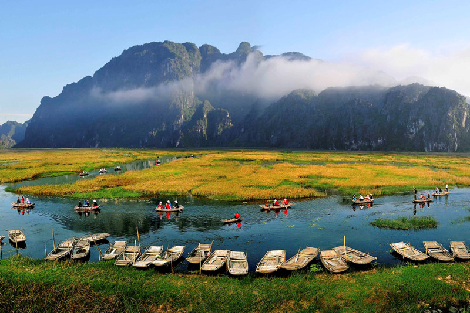

Ninh Bình nằm ở cực nam đồng bằng Bắc Bộ, cách thủ đô Hà Nội khoảng 90 km về phía Nam, là vùng ranh
giới của 3 khu vực địa lý: Tây Bắc, châu thổ sông Hồng và Bắc Trung Bộ. Phía Bắc giáp tỉnh Hà Nam; phía
Đông giáp tỉnh Nam Định; phía Đông Nam giáp biển Đông; phía Tây, Tây Nam giáp tỉnh Hòa Bình và Thanh
Hóa. Diện tích tự nhiên khoảng 1.386km2, dân số khoảng 952.000 người. Ninh Bình được biết đến là nơi có
nguồn tài nguyên du lịch phong phú với nhiều di tích lịch sử, văn hóa, danh lam thắng cảnh nổi tiếng và
môi trường sinh thái tự nhiên rất có giá trị.

Tuy là một tỉnh không lớn nhưng Ninh Bình có địa hình rất đa dạng: có núi, đồng bằng, vùng ven biển mang đầy đủ sắc
thái của nước Việt Nam thu nhỏ. Với 3/4 diện tích là đồi núi, địa hình đa dạng, hệ động thực vật phong phú đã hình
thành nhiều khu du lịch có cảnh quan thiên nhiên đẹp, hấp dẫn khách du lịch, nổi tiếng như: Tam Cốc - Bích Động, Vườn
quốc gia Cúc Phương, Khu bảo tồn thiên nhiên đất ngập nước Vân Long, Khu du lịch sinh thái hồ Yên Thắng, hồ Đồng
Thái, Vườn Chim Thung Nham, Thung Nắng, động Thiên Hà, vùng ven biển Kim Sơn, các suối nước khoáng nóng… Đặc
biệt là Quần thể danh thắng Tràng An đã được tổ chức UNESCO công nhận là Di sản Văn hóa và Thiên nhiên thế giới
năm 2014, di sản hỗn hợp đầu tiên của Việt Nam và Đông Nam Á.
Không chỉ nổi tiếng với các danh lam thắng cảnh đẹp, Ninh Bình là vùng đất giàu truyền thống lịch sử văn hóa với 1.821
di tích lịch sử đã được xếp hạng. Nơi đây là mảnh đất thiêng, từng là Kinh đô của Nhà nước phong kiến trung ương tập
quyền đầu tiên của Việt Nam tồn tại 42 năm (từ năm 968-1010) gắn liền với ba vương triều: Ðinh, tiền Lê và khởi đầu
triều Lý. Hiện Ninh Bình sở hữu những di sản văn hóa - lịch sử rất có giá trị, là nguồn tài sản vô giá, tiêu biểu như: Cố đô
Hoa Lư, Nhà thờ đá Phát Diệm, chùa Bích Động, chùa Bái Đính, đền thờ Đức Thánh Nguyễn, đền Thái Vi...